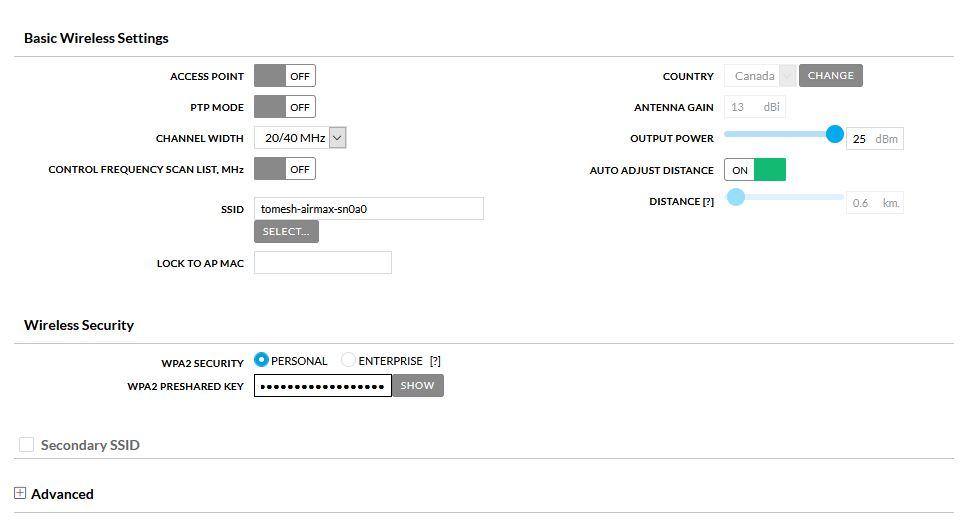

CPE - Ubiquiti
This document covers setup for the following devices. Other devices may be similar.
What You Will Need
You will need to collect the following information:
- SSID of the supernode antenna you wish to connect to
- Your assigned node name
- Your assigned
IP Address,NetmaskandGateway - A computer with WiFi for use with the management radio method or a computer with a network port for the ethernet cable method.
Connecting to the CPE for the First Time
Connect Using the Management Radio
Most devices come with a second Management Radio that is active for a short period of time after the device is powered on. While active it creates a wireless access point dedicated to configuration of the device. This access point can be used to connect a laptop or phone to it over Wi-Fi. The IP address of this interface static and will never change.
- Connect to the Management Radio access point of the device. It should be a combination of the name of the unit and the
MACaddress.

NOTE The Management Radio only is only on for a short period of time after boot. If the device cannot be found power cycle it by unplugging the device from the POE injector, wait 10 seconds, and plug it in again.
- Once the WiFi connection is establish, open the browser and visit
https://192.168.172.1/
Connect Using an Ethernet Cable
Device can be connected to using an Ethernet cable. This method requires the knowledge of the device's IP address. If the device has been previously configured, and the IP address is known, adjust the steps below accordingly. If the IP address is not known, a factory reset can be performed by pressing the reset button for 30 seconds. This will erase all settings on the device and set the default IP address of 192.168.1.20 again.
-
Plug a network cable into your computer and into the
Networkport of yourPOE injector -
Configure your laptop's network interface to
192.168.1.50. -
Open the browser and visit
https://192.168.1.20/
First Time Configuration
-
If there is a warning about a certificate, process anyway.
- Firefox: Press Advanced, then
Accept the Risk and continue - Chrome: Press Advanced, then
Proceed to xxx.xxx.xxx.xxx (unsafe)
- Firefox: Press Advanced, then
-
Select the country as
Canada -
Accept the user
EULA -
Click
Continue -
Choose Your username and password for the device. TCN Standard username is
tomesh
Configure Wireless
- Select the
Wirelessicon from the left menu

-
Enter the remote antennas SSID under
SSID -
Enter the
WPA2 PRESHARED KEY. TCN standard key istorontocommunitynetwork

- Select
Save Changes
Configure Network
- Select the
Networkicon from the left menu

-
Set the
IP ADDRESSto the address assigned to your node -
Set the
NETMASKif needed. The default is255.255.255.0and used in most instances -
Enter the
GATEWAYassigned to your node. Usually same as yourIP ADDRESSbut ending in1 -
Set the DNS to
10.10.10.10 -
Set
IPV6address toSTATIC -
Enter
IPV6 ADDRESS,IPV6 NETAMSKandIPV6 GATEWAYto values provided.IPV6 NETAMSKis usually64

- Select
Save Changes
NOTE If you are using a network cable method of connecting to the device, you will need to change your IP address of your computer to the same network as you entered in the IP ADDRESS field. Simply select a different at the end. For example, if your assigned IP address is 100.64.10.55 set your computer to 100.65.10.200. You will have to use your browser to visit https://YOUR ASSIGNED IP for example https://100.64.10.55
Configure System
- Select the
Systemicon from the left menu

-
Set
DEVICE NAMEto your assigned node name -
Toggle
NTP CLIENTon -
Set
NTP SERVERto10.10.10.123 -
Set
TIMEZONEto(GMT -05.00) Eastern -
Toggle
READ-ONLY ACCOUNTon -
Set
READ-ONLY ACCOUNT NAMEtoubnt -
Click
CHANGEnext toChange Read Only User Passwordand set the password totomeshnet -
Fill out the location section.

- Select
Save Changes